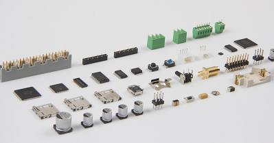

En electrónica es bastante frecuente verse necesitado de contabilizar eventos y por tanto se requiere utilizar un contador, en nuestro caso se tratará de un contador electrónico digital. Un contador electrónico básicamente consta de una entrada de impulsos que se encarga de conformar (escuadrar), de manera que el conteo de los mismos no sea alterado por señales no deseadas, las cuales pueden falsear el resultado final. Estos impulsos son acumulados en un contador propiamente dicho cuyo resultado, se presenta mediante un visor que puede estar constituido por una serie de sencillos dígitos de siete segmentos o en su caso mediante una sofisticada pantalla de plasma.
Éste se usa mediante una luz roja indica si está apagado o está realizando algún consumo; cuando la luz parpadea con rapidez significa que se está produciendo un consumo eléctrico y cuando la luz parpadea con mucha rapidez es que hemos sobrepasado el gasto de luz.
Caracteristicas
Un número máximo de cuentas (módulo del contador)
Cuenta ascendente o descendente.
Operación síncrona o asíncrona.
Autónomos o de auto detención.
Dale click en el video para ver mas informacion